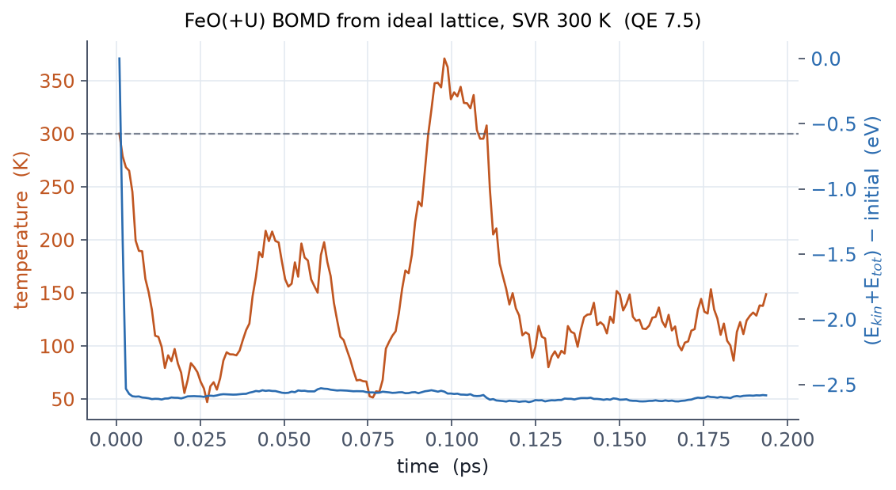

calculation='md' in pw.x is Born-Oppenheimer MD (BOMD): every step
converges an SCF and moves the ions on the resulting forces.
(Car-Parrinello MD lives in the separate executable cp.x.) It is the tool
for finite-temperature sampling, and in particular the starting point for
generating training data for machine-learned potentials.
Input skeleton
&CONTROL
calculation = 'md'
nstep = 2000
dt = 20.0 ! Rydberg atomic units, about 0.968 fs
tprnfor = .true.
tstress = .false.
disk_io = 'none' ! I/O is the bottleneck in MD
/
&SYSTEM
...
nosym = .true. ! mandatory for MD (see common mistakes)
/
&IONS
ion_dynamics = 'verlet'
ion_temperature = 'svr' ! stochastic velocity rescaling
tempw = 300.0 ! K
nraise = 100
/
dtis in Rydberg atomic units (20.0 a.u. ≈ 0.968 fs), not femtoseconds.- The
'svr'thermostat (stochastic velocity rescaling, Bussi-Donadio-Parrinello) samples the canonical ensemble correctly and is robust; a good default.nraiseis its coupling period. - Without
disk_io='none'the wavefunction writes drown the run in I/O. - Every step is an SCF, so the
&ELECTRONSsettings govern the speed. The wavefunction and potential extrapolation (pot_extrapolation/wfc_extrapolation) matter a great deal.
Measured: 300 K BOMD of the FeO(+U) cell

Principles for ML training data
- Keep
ecutwfc,ecutrho, the k-grid, smearing, and U absolutely identical across every frame. A dataset with mixed settings cannot be repaired at training time. - Converge on forces, not energies (Chapter 05).
- Consecutive MD frames are strongly correlated; subsample (every 50 steps, say).
- Getting stress into the dataset requires
tstress=.true., but the Hubbard stress dies withstres_huberrors in the nosym+U (ortho-atomic) combination (measured on QE 7.5). In that case compute stress in separate scf runs on the extracted frames. - Check each step's
Ekin + Etot (const)line and the temperature trace in the output.
Running MD without nosym = .true..
Symmetry is detected on the initial structure, and thermal motion breaks
it in the very first step, stopping the run with
checkallsym: some of the original symmetry operations not
satisfied (we hit this ourselves). For DFT+U MD also set
mixing_fixed_ns: with symmetry off, rotations among
degenerate orbitals stall the SCF, and freezing the occupation matrix
for the first iterations releases it
(E13, measured). Mistaking
dt for femtoseconds (a 20 fs step) blows the trajectory up
immediately. Finally, if an SCF inside the MD fails to converge, QE can
continue on the previous density, and that frame's forces are
contaminated: grep the log for convergence NOT achieved
and drop those frames from any training set.
Related examples
- E13 · Slabs and AIMD: the measured 300 K BOMD of the FeO cell and frame-extraction practice.